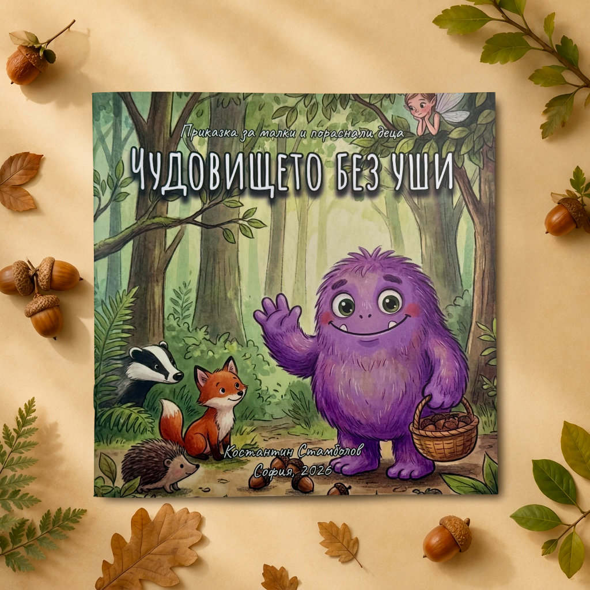

Нова детска книга • 2026
Чудовището без уши
Приказка за малки и пораснали деца.
История за онзи, който иска да бъде чут.
В една тиха гора живее пухкаво и добродушно чудовище. То е голямо, внимателно и почти безшумно, но няма уши и затова не може да говори с никого.
Всяка вечер чудовището се промъква до една човешка къща, за да слуша приказките, които майка чете на двете си деца. Когато горската фея разбира защо го прави, започва пътят му към глас, приятели и място, където да принадлежи.
Книгата говори за различността без да я превръща в урок. Подходяща е за четене вечер и за разговори с деца за самотата, добротата и това как приятелството понякога започва от простото желание да разбереш другия.